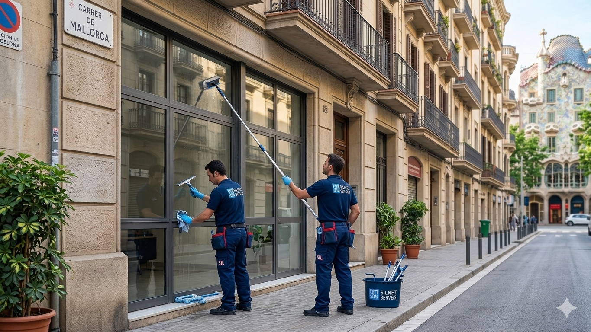

Servicio profesional de limpieza de comunidades
En Silnet Serveis ofrecemos un servicio especializado de limpieza de comunidades en Barcelona, diseñado para mantener en perfecto estado portales, escaleras, ascensores y zonas comunes.
Nuestro equipo garantiza una limpieza constante, orden y desinfección, mejorando la imagen del edificio y la convivencia entre vecinos.
¿Qué incluye nuestro servicio?
✔ Limpieza de portales y entradas
✔ Barrido y fregado de escaleras
✔ Limpieza de ascensores
✔ Desinfección de superficies comunes
✔ Mantenimiento periódico personalizado
✔ Vitrificado de suelos
✔ Limpieza de cristales
Ventajas de contratar Silnet Serveis
✔ Más de 30 años de experiencia
✔ Personal profesional y de confianza
✔ Productos ecológicos
✔ Servicio adaptado a cada comunidad
✔ Mantenemos continuidad en el personal para ofrecer un servicio más cercano y de confianza

